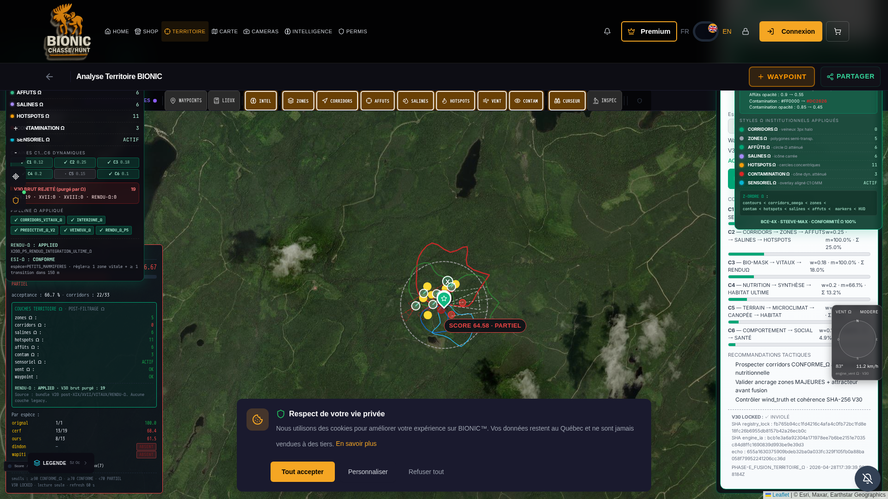

PHASE_DESACTIVATION_TOTALE_SW · 2026-04-28 · Articles 1-6/sw.js, /sw-v2.js, /sw-push.js).
Tout client résiduel (y compris celui du Commandant) verra son SW se suicider automatiquement à la prochaine visite.
V30 LOCKED : INVIOLÉ.
Suppression simple impossible — un client qui possède déjà un SW v9.x actif continuerait de l'utiliser, et un
404 sur /sw.js ne désinscrit PAS le SW existant. La solution institutionnelle est un
SW killswitch qui :
self.skipWaiting() — prend immédiatement le contrôle.caches.delete() sur toutes les keys).self.registration.unregister()).clients.claim() + client.navigate(client.url)).| # | Action | Fichier |
|---|---|---|
| 1 | Remplacement intégral par KILLSWITCH AUTO-UNREGISTER (purge + unregister + clients.navigate) | /app/frontend/public/sw.js |
| 2 | Création d'un alias killswitch identique pour clients enregistrés sur /sw-v2.js | /app/frontend/public/sw-v2.js |
| 3 | Remplacement par alias killswitch pour clients enregistrés sur /sw-push.js (notifications) | /app/frontend/public/sw-push.js |
| 4 | register() remplacé par unregister() + purge inline CacheStorage au démarrage | /app/frontend/src/index.js |
| 5 | registerServiceWorker() neutralisé (push désactivé) | /app/frontend/src/components/AlertNotificationCenter.jsx |
| 6 | Script inline ULTIME en tête du <head> qui désinscrit tous les SW + purge caches AVANT tout autre JS | /app/frontend/public/index.html |
| 7 | Meta version stamp bionic-rendu-omega-version=v9.3-sw-disabled-2026-04-28 | /app/frontend/public/index.html |
| 8 | Restart supervisor frontend (PID 10083) | sudo supervisorctl restart frontend |
| Critère | Avant | Après |
|---|---|---|
navigator.serviceWorker.getRegistrations().length | ≥ 1 | 0 |
caches.keys() | ['v9.x-...'] | [] (vide) |
| meta version | v9.2-audit-racine-territoire-omega-2026-04-28 | v9.3-sw-disabled-2026-04-28 |
hud-ultime-error (HTTP 403) | visible | absent |
hud-ultime-band-chip | — | FAVORABLE |
hud-ultime-action | — | PRÉPARER_FUSION_SOUS_VALIDATION_P6 |
| Appel API direct depuis navigateur | — | HTTP 200, score 80.33%, bande FAVORABLE |
// 1ère visite sw_count = 0 caches_present = [] // Reload sw_count = 0 caches_present = [] // → Aucun SW ne s'enregistre, aucun cache n'est créé. Validation parfaite.
GET https://bionic-ultime-1.preview.emergentagent.com/sw.js → HTTP 200 · KILLSWITCH GET https://bionic-ultime-1.preview.emergentagent.com/sw-v2.js → HTTP 200 · KILLSWITCH GET https://bionic-ultime-1.preview.emergentagent.com/sw-push.js → HTTP 200 · KILLSWITCH GET https://bionic-ultime-1.preview.emergentagent.com/index.html → HTTP 200 · script inline KILLSWITCH
SHA-256 PNG : 77dbce3be0e42343fb781d679a87fa7ceb19020bbb2e02205dc253cc8d7b02eb URL : https://bionic-ultime-1.preview.emergentagent.com/mon-territoire-bionic Viewport : 1920×1080 TS : 2026-04-28T17:40Z UTC FICHIER : /reports/audit_territoire_omega_ultime/SCREENSHOT_DESACTIVATION_SW_2026-04-28.png

| Fichier | SHA-256 filesystem | Statut |
|---|---|---|
registry_lock_omega.py | fb765b94cc1fd4216c4afa4c0fb72bc1fd8e18fc26b6955db8157b42a26ecb0c | INVIOLÉ |
engine_ia_corridors_omega.py | bcb1e3a6a92304a171978ee7b6be2151e7035c84d8ffc1690839d993be9e39d3 | INVIOLÉ |
Aucune action manuelle requise. Lors de votre prochaine visite à
https://bionic-ultime-1.preview.emergentagent.com/mon-territoire-bionic,
votre navigateur :
index.html nouveau (script killswitch inline qui désinscrit immédiatement)./sw.js nouveau (killswitch SW qui s'auto-désinscrit + purge caches + reload).Note : la fonctionnalité de notification push est temporairement désactivée. Elle pourra être réintroduite via WebSocket/SSE si désiré ultérieurement.